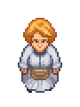

Cook
| Cook | |
|---|---|
 | |
Basic Information
| |
Location :
|
Refugee camp |
Role :
|
Cook |
Trade Information
| |
Type of Goods :
|
Recipe |

Cook is the cook of the Refugee camp. She is the first new refugee to show up, once an additional tent has been built by the player and a new refugee has been summoned. Through conversation with her, you receive the task of building the refugees a proper kitchen.
Quests
She first asks you to build a kitchen at the camp, so that she does not get bored and sad. This quest unlocks the ability to trade with her, but only the first two tiers are unlocked.
The next assignment is to improve the kitchen, so it feels more like home to her. With it, you gain the ability to build kitchen II.
After you built the kitchen II and spoke with her about it, she'll ask you to construct Beehives to sweeten the taste of the foods. (Only need to build 2 of the 3 to complete the quest) After finishing this quest, she gives you 3 recipes (
Recipe In Lentil We Trust,
Recipe Vegetable set,
Honey cake) and unlocks the tier III trade option.
Trades
|
|
| ||||||||||||||||||||||||||||||||||||||||||||||||||||
| |||||||||||||||||||||||||||||